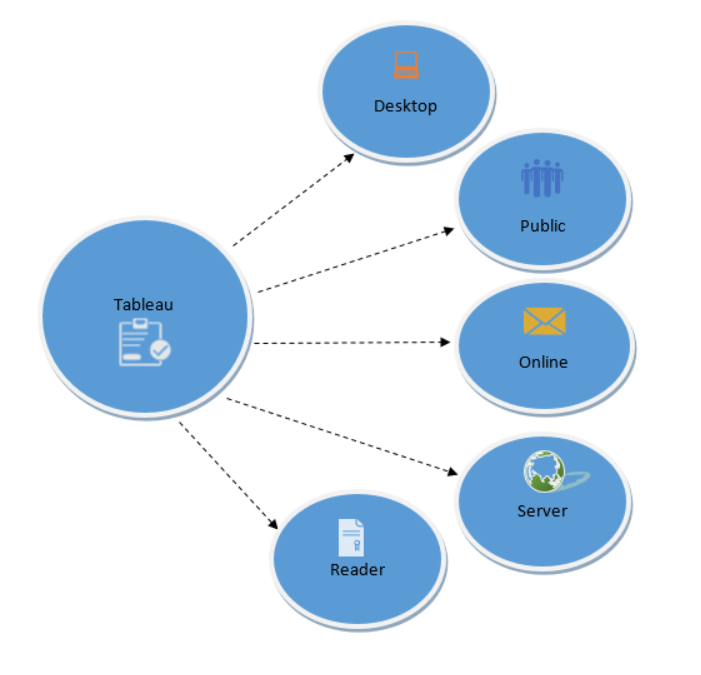

Tableau is a powerful and fastest growing data visualization tool used in the Business Intelligence Industry. It helps in simplifying raw data in a very easily understandable format. Tableau helps create the data that can be understood by professionals at any level in an organization. Data analysis is very fast with Tableau tool and the visualizations created are in the form of dashboards and worksheets.
Tableau offers a group of products.

In this post, I would like to present three commonly used charts: Bar Chart, Pareto Chart and Quadrant Chart. The dataset I used is the Superstore 2020 sales data. You can download it from here. I created the charts in the Tableau Desktop and then published them on my Tableau Public website.
A blend of Bar charts are to show each region’s sales figure across the quarters from the year 2016 to 2019.
Pareto Chart is very useful and the purpose of the Pareto chart is to highlight the most important components among a (typically large) set. The link to this chart in my Tableau Public.
In this chart, I plot each state’s Sales and Profit. X-axis is the state’s Sales in Percentile and Y-axis is the state’s Profit in Percentile.
The size of the bubble reflects the Sales revenue. That being said, the larger it is, the more sales it has.
The color of the bubble means the Profitability. The green color indicate it’s profitable whereas the red color indicates non-profitable. The density of the color means the profitable level or non-profitable. In other words, the denser the color is, the more profitable or more non-profitable it is.
The link to this chart in my Tableau Public.